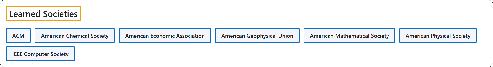

3. Learned Societies
Classification

Glossary
| Term | Definition | 中文翻译 | Source |
|---|---|---|---|
| Learned Societies 学会 |
(context) "an organization to which people who share similar interests can belong" | （语境）一个有共同兴趣的人可以加入的组织 | Cambridge University Press & Assessment, n.d., "society" noun (ORGANIZATION) |
| ACM 美国计算机协会 |
"ACM, the world's largest educational and scientific computing society, delivers resources that advance computing as a science and a profession." | ACM 是世界上最大的教育和科学计算学会，提供推动计算作为一门科学和一种职业发展的资源。 | Association for Computing Machinery, 2018 |
| American Chemical Society 美国化学会 |
"Today, ACS is one of the world’s largest scientific societies, supporting research, education, policy, and industry across the globe." | 如今，ACS 是世界上最大的科学学会之一，在全球范围内支持研究、教育、政策和产业。 | American Chemical Society, n.d. |
| American Economic Association 美国经济学会 |
"The American Economic Association (AEA) is a nonprofit, nonpartisan, scholarly association with more than 17,000 members from academia, government, and business who are committed to the advancement of economics and its enduring contributions to society." | 美国经济学会（AEA）是一个非营利无党派学术协会，拥有超过 17,000 名来自学术界、政府和商界的会员，他们致力于推动经济学的发展及其对社会的持久贡献。 | American Economic Association, n.d., para. 1 |
| American Geophysical Union 美国地球物理联合会 |
"AGU is a global community supporting more than half a million advocates and professionals in Earth and space sciences." | AGU 是一个全球性社群，支持着超过五十万名地球与空间科学领域的倡导者和专业人士。 | American Geophysical Union, n.d. |
| American Mathematical Society 美国数学学会 |
"We are a society of mathematics students and professionals dedicated to advancing research, supporting learning and careers, and building our mathematical community." | 我们是一个由数学学生和专业人士组成的学会，致力于推进研究、支持学习与职业发展，并建设我们的数学社区。 | American Mathematical Society, n.d., "About Us" banner |
| American Physical Society 美国物理学会 |
"The American Physical Society is a nonprofit membership organization working to advance physics by fostering a vibrant, inclusive, and global community dedicated to science and society." | 美国物理学会是一个非营利会员组织，致力于推动物理学发展，方式是培育一个充满活力、包容、全球化并致力于科学与社会的社群。 | American Physical Society, n.d., para. 2 |
| IEEE Computer Society IEEE 计算机学会 |
"IEEE CS is the trusted organization dedicated to engaging the engineers, scientists, academia, and industry professionals from across the globe driving continued advancements in computer science and technology." | IEEE CS 是一个值得信赖的组织，致力于联系来自全球的工程师、科学家、学术界和行业专业人士，正是他们推动着计算机科学与技术的持续进步。 | IEEE Computer Society, n.d., para. 2 |
References
American Chemical Society. (n.d.). About ACS. Retrieved October 27, 2026, from https://www.acs.org/about.html
American Economic Association. (n.d.). About the AEA. Retrieved October 27, 2026, from https://www.aeaweb.org/about-aea
American Geophysical Union. (n.d.). AGU Newsroom. Retrieved October 27, 2026, from https://news.agu.org/
American Mathematical Society. (n.d.). About us home. Retrieved October 27, 2026, from https://www.ams.org/about-us/about
American Physical Society. (n.d.). About. Retrieved October 27, 2026, from https://www.aps.org/about
Association for Computing Machinery. (2018). ACM Code of Ethics and Professional Conduct. Retrieved October 27, 2026, from https://www.acm.org/code-of-ethics
Cambridge University Press & Assessment. (n.d.). Society. In Cambridge Dictionary. Retrieved October 27, 2026, from https://dictionary.cambridge.org/dictionary/english/society
IEEE Computer Society. (n.d.). About the IEEE Computer Society. Retrieved October 27, 2026, from https://www.computer.org/about